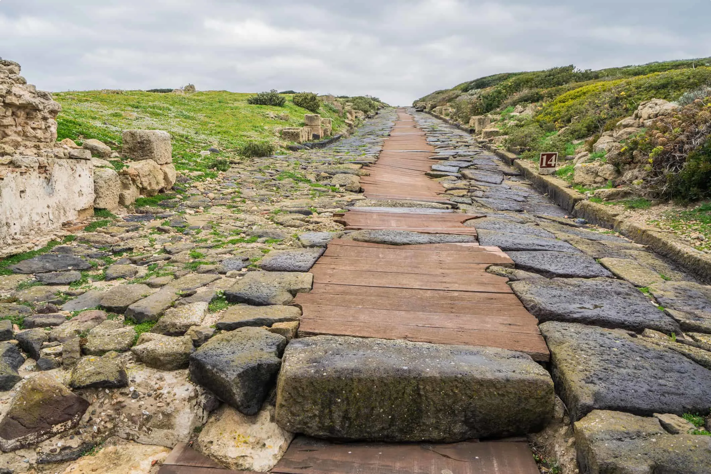

Hello, and welcome to my map of Roman Trade Routes from beginning to peak. This map outlines the evolution of the Roman influence through trade starting at around the time the city was belived to be founded in 753 BCE to its peak in 117 CE. I created this map to give context to a topic that has facisnated me for my entire life, being the impact that history and older civilizations have on the world today. Trade routes are one of the best ways to do this, as a lot of them (espically from the Rome) still exist today!
My intrest in this topic started as a kid growing up in Norwich, England, surrounded by Roman Roads. This gave me a lot of context to my history lessons in school, and made me realize that history is not stories of the past, it is actually the story of our present day.
The idea of the map came from ORBIS Stanford Geospatial Network Model a map that allows its users to simulate traveling as a Roman, and seeing how long certain routes would take. I took the data from ORBIS, and combined it with data from The Oxford Roman Economy Project provided by Jack Hanson. This data provides start dates for cities, allowing me to create a temporal interactive map of how cities and the routes that connect them display over time.
This project is very important to me as it serves a very real purpose, that is, allowing people to see the real impact that Rome has had on our modern world, and also gaining an understanding for how large the Roman Empire actually was, and how powerful they came to be simply with the power of transportation. Really glad you have made it to the page, hope you enjoy!
